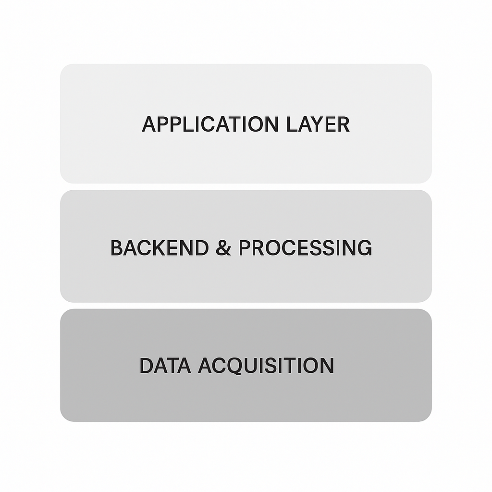
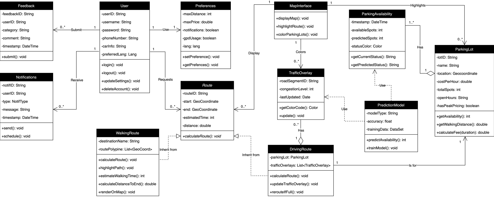
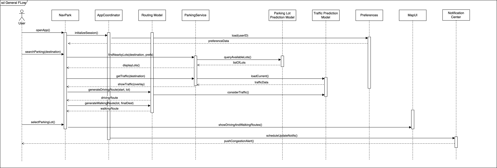
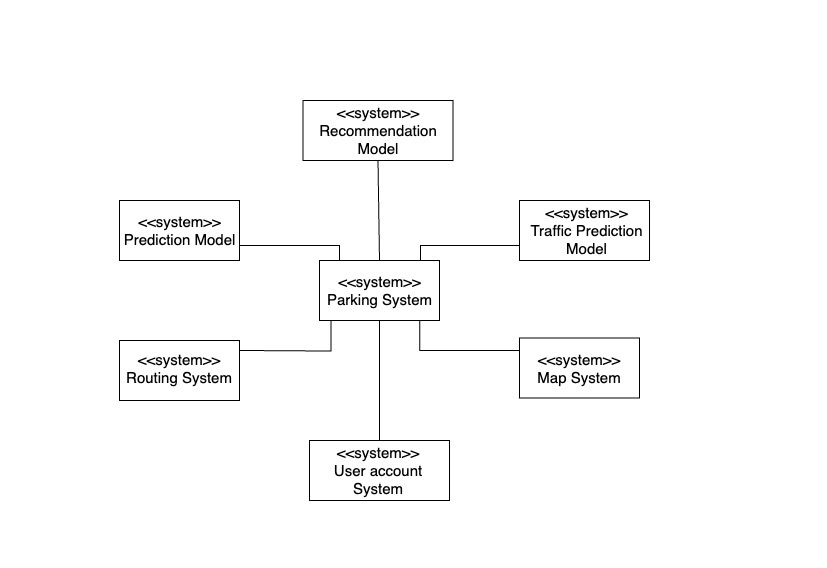

General Overview

Figure: Architecture Overview
- Data Acquisition Layer: This layer is responsible for ingesting the external data. Its primary source is the Hong Kong Government's public data API, which provides real-time and historical parking vacancy information. It also integrates with external mapping services for traffic data, which is used to generate the color-coded congestion layer on the map.
- Backend & Processing Layer: This is the backend of NavPark. This layer's responsibilities include:
- Data Processing: Aggregating and Processing incoming data from the acquisition layer.
- Prediction Model: Running a machine learning model that uses historical data to forecast parking availability with ≥70% accuracy for the next two hours.
- API Server: Exposing a secure API for the client application to fetch data, manage user profiles, and handle requests.
- Database Management: Storing user account and preferences data, parking lot information, and historical datasets.
- Application Layer: The user-facing component, consisting of the NavPark application for iOS and Android. It provides an intuitive, one-handed use interface featuring an interactive map with color-coded Availability States (green, yellow, red), multiple destination input methods, and seamless integration with external map APIs for turn-by-turn navigation.
Detailed Architecture Layer Overview
| Layer | Primary Responsibilities | Key Technologies / Components |
|---|---|---|
| Data Acquisition |
|
|
| Backend & Processing |
|
|
| Application Layer |
|
|
Class Diagram

Figure: NavPark System Class Diagram
Class Descriptions
| Class Name | Type | Role Explanation |
|---|---|---|
| User | Entity | Stores user info (credentials, car info), settings, and preferences. |
| Preferences | Entity | Holds specific user settings like notification toggles, preferred price ranges, max walking distance, and language. |
| ParkingLot | Entity | Represents a physical parking lot, storing its location, fee structure, hours, and real-time/predicted availability. |
| Route | Abstract | A base class defining common properties and methods for all types of routes (e.g., start point, end point). |
| DrivingRoute | Control | A concrete class that handles vehicle routing logic, integrating with the traffic overlay to calculate travel time. |
| WalkingRoute | Control | A concrete class that handles pedestrian routing from a selected parking lot to the user's final destination. |
| TrafficOverlay | Entity | Represents traffic data for a map area. Used by the MapInterface to display congestion levels with color coding. |
| PredictionModel | Abstract | Defines the base interface for all prediction logic, ensuring they have a common method (e.g., `predict()`). |
| ParkingPrediction | Concrete | A concrete model implementation that predicts parking lot vacancy based on historical data and real-time events. |
| TrafficPrediction | Concrete | A concrete model implementation that predicts future traffic congestion levels based on past data and known events. |
| MapInterface | Boundary | The primary UI component responsible for rendering the interactive map, displaying routes, parking lots, and overlays. |
| NotificationService | Control | Manages the logic and delivery of push notifications (e.g., availability changes, departure reminders) to the user's device. |
| AuthService | Control | Handles all authentication and authorization tasks, such as user login, registration, and session management. |
| PreferencesService | Control | A service responsible for loading, saving, and managing a user's preferences from the database. |
Sequence Diagram

Figure: Sequence Diagram for Route Navigation
Activity Diagram

Figure: Activity Diagram for Route Navigation
Context Model

Figure: NavPark System Context Diagram
The main external and internal components interacting with the Smart Parking System are:
- User Account System: Manages user login and preferences such as walking distance, EV charging needs, and cost sensitivity. These preferences are used by the Recommendation Model to personalize suggestions.
- Routing System (OpenStreetMap API): Generates optimal routes from the user's location to the selected parking spot. Provides ETA data which is used by the Prediction Model to forecast availability.
- Prediction Model: Uses historical parking and traffic data to predict availability of parking spots at the user's estimated arrival time. It does not use live traffic data.
- Recommendation Model: Filters and ranks parking options based on predicted availability, user preferences, and proximity, ensuring the most relevant parking options are shown.
- Traffic Prediction Model: Analyzes historical traffic flow patterns to help the Prediction Model improve the accuracy of availability forecasts. It does not use live traffic feeds.
- Map System: Displays an interactive map interface with base map tiles, route lines, traffic zones, and parking spot markers, helping users visually explore and select parking options.